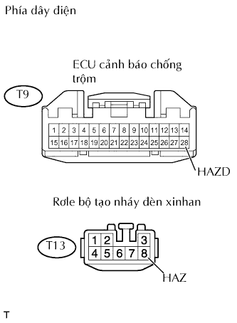

HỆ THỐNG ĐIỀU KHIỂN KHOÁ CỬA TỪ XA > Không có chức năng trả lời |
| 1.KIỂM TRA CHỨC NĂNG ĐIỀU KHIỂN KHOÁ CỬA TỪ XA |
Kiểm tra chức năg khóa cửa từ xa bằng cách bấm Chìa điều khiển.
| Kết quả | Đi đến |
| Chức năng khoá cửa từ xa bình thường nhưng chức năng báo lại của đèn cảnh báo nguy hiểm không xảy ra* | A |
| Chức năng khoá cửa từ xa bình thường nhưng chức năng báo lại của còi an ninh không xảy ra* | B |
| Chức năng khoá cửa từ xa không bình thường. | C |
|
| ||||
|
| ||||
| A | |
| 2.KIỂM TRA ĐÈN CẢNH BÁO NGUY HIỂM |
Kiểm tra rằng đèn báo nguy hiểm nháy khi công tắc đèn báo nguy hiểm được ấn.
|
| ||||
| OK | |
| 3.KIỂM TRA DÂY ĐIỆN (ECU CẢNH BÁO CHỐNG TRỘM - RƠLE BỘ TẠO NHÁY XINHAN) |
|  |
Ngắt giắc nối T9 của ECU.
Ngắt giắc nối T13 của rơle.
Đo điện trở của các giắc nối phía dây điện.
| Nối dụng cụ đo | Điều kiện tiêu chuẩn |
| T9-28 (HAZD) - T13-8 (HAZ) | Dưới 1 Ω |
|
| ||||
| OK | ||
| ||